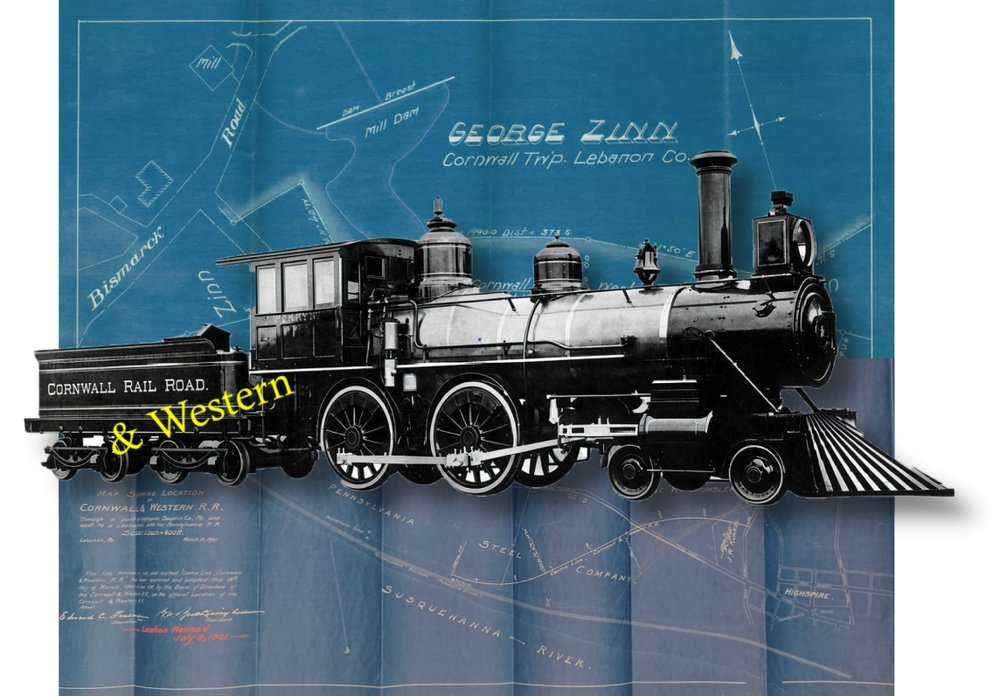
Following two recent stories of roads that served Lebanon County, consider this curious third, a rail-road: as if three railroads were not sufficient to support the local iron industry and commerce, at the turn of the 20th century a fourth railroad was being planned.
Although covered at the time in the local newspaper, this story lives again thanks to a lucky find of original material at Cornwall Manor. Get ready to climb aboard, for a story of iron, steel, and a dash of… chocolate!
Hidden Away
Sadly, after the Methodist Church Home (i.e. Cornwall Manor) acquired the "Mansion enclosure" and estate from the Freeman family in 1949, most of the historic Coleman and Freeman antique furnishings were auctioned off to offset the costs of the acquisition.
But lurking in a back hallway remained a trunk left unopened until decades later, containing the kind of odds and ends a family keeps for no particular reason other than not knowing what to do with the unimportant. Among them was a set of souvenir trivets from the World's Fair, an empty bottle of Carter's ink, and a tin of dried-up Vulcanol stove black.
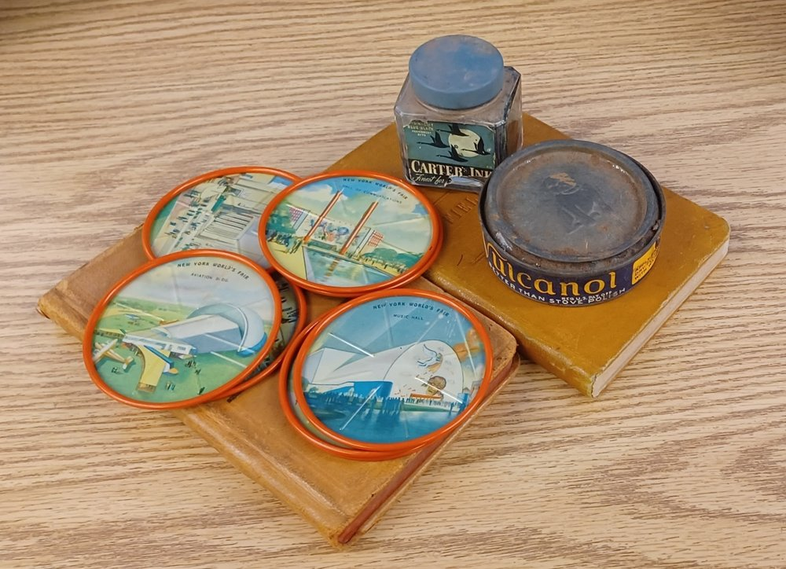
And with them a handful of small, worn leather-bound books with labels like "transit book" and "level book." Almost less interesting were the pages inside, containing simple faded pencil sketches, lines and numbers in small hen-scratched handwriting.
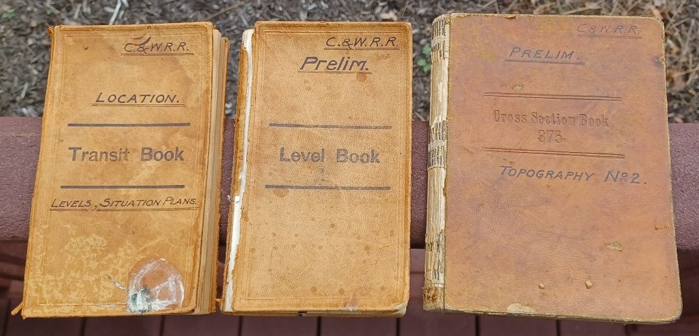
What didn't make sense were the initials "C.&W.R.R." on the cover of the books. Local history frequently refers to "C.R.R." and "C.&L.R.R.," the two railroads that serviced the Cornwall Ore Banks, and which led to development of recreational parks at Mt. Gretna and Penryn.
At first it seemed likely the books were old records of either one — the Cornwall Railroad from the 1850s and the Cornwall & Lebanon from the 1880s. After all, the names of both had undergone several iterations from the time of their inception. "C.&W.R.R." could have been referring to an early version of the same thing.
But then more books turned up — not in the trunk, but casually displayed as old reading material in the mansion library. These were different: not "C.&W.R.R." but "Mt. Hope Railway." If you know your local history — Mt. Hope was the property, not of the Colemans, but of the Grubb family, on the other side of South Mountain, down Route 72, where stood a mansion and furnace, now a winery and the Renaissance fairgrounds.
What is going on here?
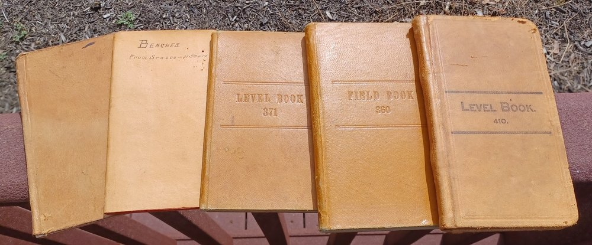
Cornwall Manor's Gateway Library includes materials that had been assembled by earlier residents with an interest in history. Dr. Thomas Hunter was a resident in the 1980s, publishing much of the local history, and was instrumental in achieving the National Historic Registry for Cornwall Manor.
Thanks to the work of Hunter and former employees, more records mentioning "C.&W.R.R." were preserved, leaving sufficient clues for digging into this story.
Weren't Three Railroads Enough?
When the Union Canal opened in 1828, steam power followed within a few more decades. Those keeping track (unintended pun) of railroads know that the first through the area was the east-west Lebanon Valley Railroad from Reading to Harrisburg in the mid-1850s. After opening, it almost immediately sold, becoming part of the Philadelphia & Reading railroad.
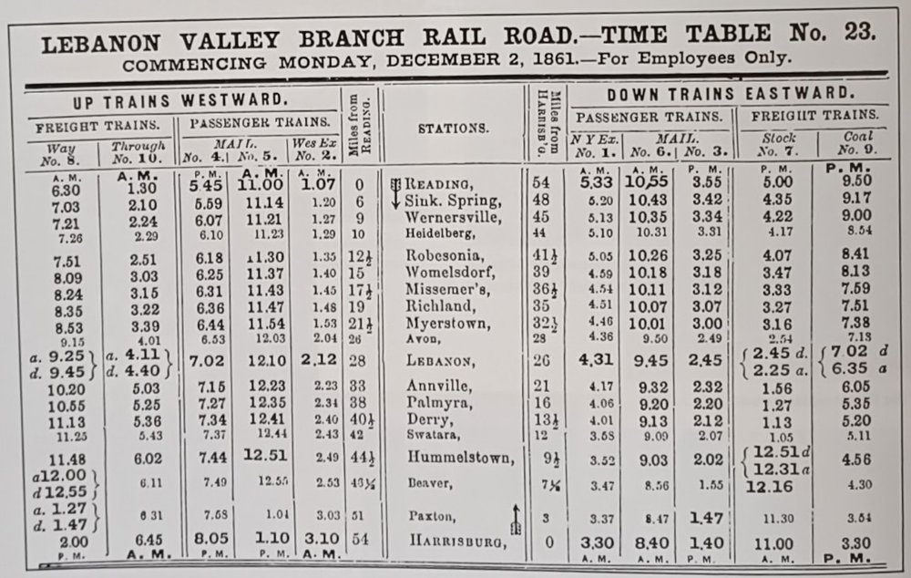
In the 1850s, when Cornwall's plank road opened a connection between the Cornwall mine and the canal, the Coleman industrialists also built the Cornwall railroad, first known as the North Lebanon railroad.
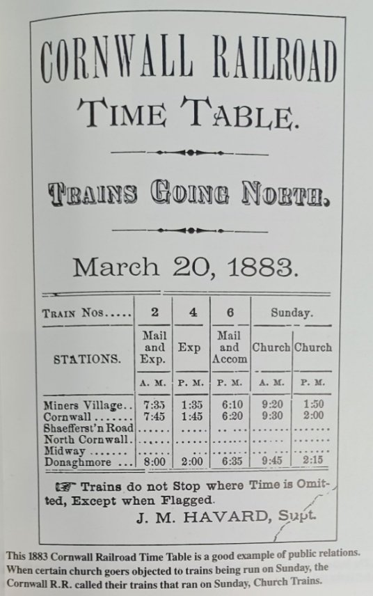
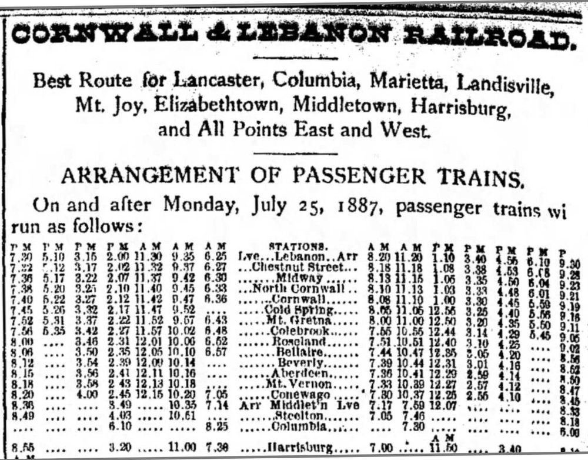
Robert H. Coleman added a third in the 1880s, the Cornwall & Lebanon railroad. It seemed redundant, having two lines connecting Lebanon to Cornwall, but initially Coleman hoped to enhance ore shipments by connecting his "Colebrook Valley Railroad" to the Pennsylvania railroad on the west end, to Cornwall on the east, by leasing the Cornwall Railroad. Strained relations with his cousins William C. Freeman and Edward C. Freeman prevented him from doing so. Rather than reconcile the bitterness, he found it easier to build his own railroad all the way to Lebanon.
The curious thing about their animosity was that of the various boards controlling the ore banks, the plank road, and the railroads, these men shared responsibility as directors and presidents.
Time Passing…
Now less than 20 years later, around 1900, the Coleman dynasty was considering another east-west line. By this time, Robert H. Coleman had suffered financial ruin and left town. Many of his assets had been bought by his cousin and rival William C. Freeman.
The Coleman name faded from Cornwall history, but commerce in iron ore remained strong with the advances of the steel industry.
Even though Coleman had already connected the Cornwall & Lebanon Railroad westward to the Pennsylvania line at Conewago, the Freemans were now seeking to connect their Cornwall Railroad to points further west.
It is unclear why they would build another route, possibly just to expand capacity. The newspaper accounts also raised the matter of shipping farm goods out of the valley.
Mt. Hope — Mt. Joy Railroad
In 1898, the Freemans hired an engineer and surveyor with the intention of expanding the Cornwall Railroad to Mt. Joy, which already reached southward through Penryn to Mt. Hope. They visited each farm on the intended path, recording the details of their survey in the field books mentioned above.
"L. Hankins" was the name of the surveyor, as recorded in the field books. His partner was C. K. Bryant. He had documented his travel expenses from Front Royal, Virginia, for reimbursement. Names of other men — Miller, Stark, Carlton, and Ballard — rounded out the team.
Their work began March 9, 1898. Several Lancaster County papers picked up the brief story two weeks later, mentioning the railroad survey passing one-half mile of Mastersonville, a crossroads on North Colebrook road. Hankins' personal ledger reported room and board at the Mastersonville hotel.
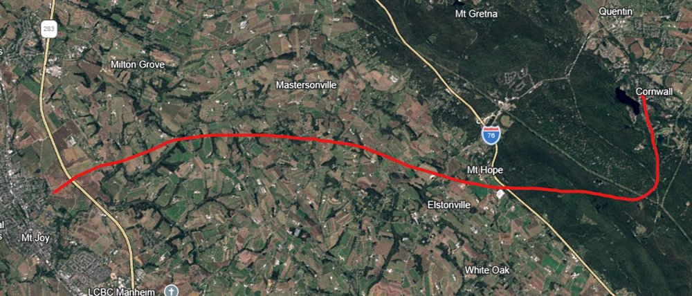
After the survey documents were delivered, the idea of the Mt. Hope railroad was abandoned and E. C. Freeman filed them away.
Freeman and Buckingham may have considered the economics of sending trains the long way over South Mountain to Mt. Joy, when a more direct route could be had by intersecting the Cornwall Railroad nearer to both the Cornwall Ore Bank and Lebanon industries.
More likely they had caught wind of a potential merger in the steel industry (read on…).
Chartering the Cornwall & Western Railroad
The Cornwall & Western Railroad was authorized in March 1901, with stock valued at $250,000. The primary shareholders were Edward C. Freeman and his brother-in-law Benjamin H. Buckingham, of the Cornwall estate.
The news article made no mention of the Mt. Hope extension to the south, but instead a 25-mile route westward from Cornwall to Steelton, through Fontana and Campbelltown. It would pass by the marble quarries near Derry and the Walton sandstone quarry on the Swatara.
The Cornwall & Western Railroad would serve the southern part of Lebanon County, the newspaper claiming: "People living in that section are anxious to see the road built."
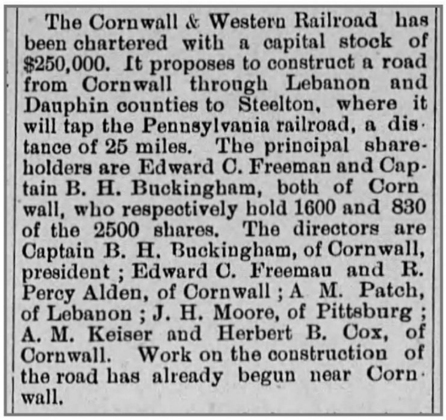
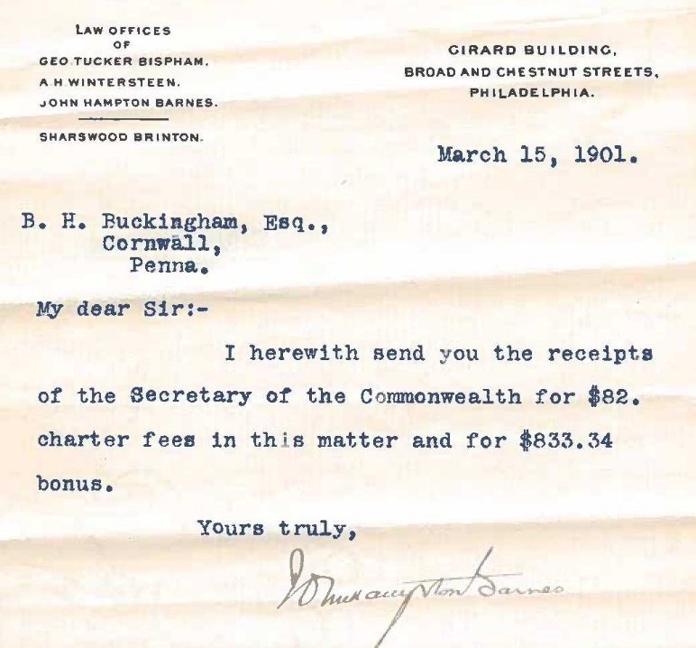
Buckingham would serve as president. Freeman, his cousin lawyer R. Percy Alden, and six other local businessmen served as directors.
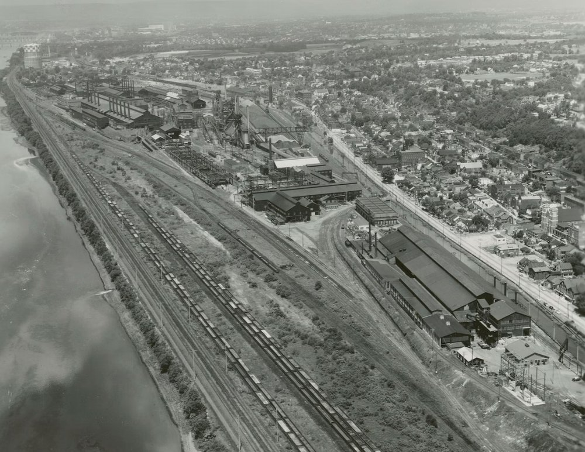
Pennsylvania would also benefit from having a new line into Lebanon, which had become a "rich freight-producing district." Plans included a length of double-tracking of the Cornwall Railroad between Lebanon and Midway, and the expansion of freight yards, to serve the 25-mile connection to the Pennsylvania Steel works at Steelton.
The Cornwall Railroad would also be building a roundhouse twice as large as the existing one at the Union Canal basin in Lebanon. They anticipated adding five locomotives for the Cornwall & Western to the five already in service.
Westward Through the County
In early November of 1900, several months before the charter approval, J. R. Savage the engineer and surveyor Hankins were beginning again.
In addition to their leather-bound field books, other survey records were left behind in the Cornwall mansion. Among them are survey blueprints and copies of the right-of-way agreements that had been negotiated with each landowner. A register compiled by Savage listed each property to be traversed by the rail, with the linear distance and acreage of each agreement.
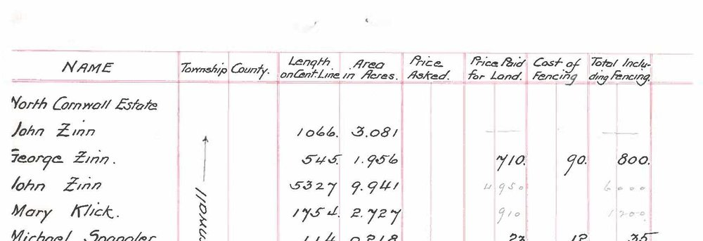
The landowners signed agreements ceding a strip sixty feet wide, for the reported price of about $130 per acre. However, the engineer's record shows that some owners asked a lot more and settled for up to ten times that rate. In many cases the cost of fencing was also included.
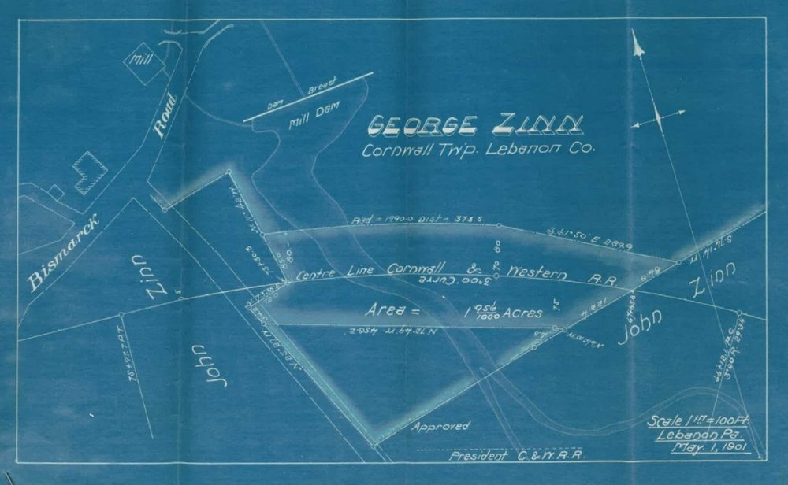
The surveying work drew enough attention that a news story appeared January 24th, describing the work as being done by the Pennsylvania Railroad under "the greatest secrecy, and the engineers themselves have not made any statement of the purpose of the work."
"Unverified reports" claimed the surveying work concerned the construction of a rail connecting the Cornwall Railroad to the Pennsylvania Railroad near Middletown.
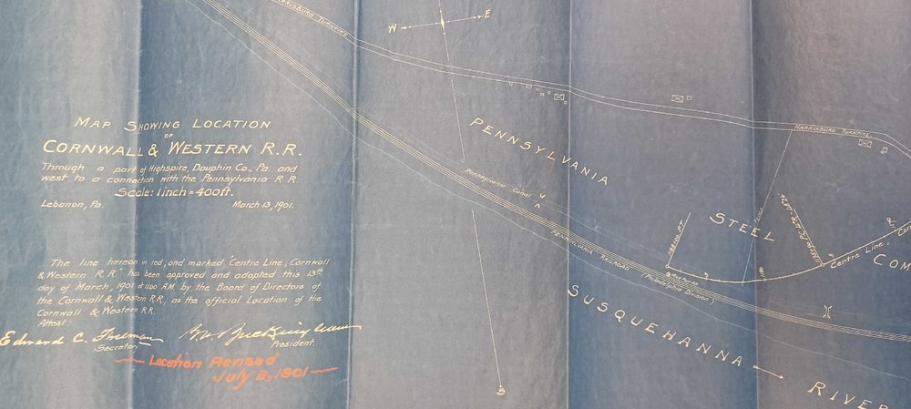
As the work of the survey neared completion, spokesmen for the Cornwall railroad were tight-lipped, whether President B. H. Buckingham, Superintendent A. M. Patch, or Chief Engineer Savage, each either denied reports or declined to be interviewed.
Expansive Excitement
In mid-March, when release of the charter made the story official, Savage and H. C. Shirk the attorney were visiting landowners, securing their agreement to rights-of-way. The farmers were described as "positive," expecting improved delivery of their produce to market.
They were supportive in every way, including on receipt of notices that certain barns and outbuildings must soon be removed. No obstacles were expected from the locals in constructing the line. Instead, rivalry arose among the towns along the route — Fontana, Mt. Pleasant, Campbelltown, Hockersville — vying for the construction of train stops on the line.
Rivalry of another type erupted from the offices of the Reading Railroad, which viewed the new line as a breach in the relations and agreements between the two major railroads. The Reading rattled its sword, proposing a long run from Chambersburg to Pittsburgh in competition with the Pennsylvania Railroad.
Along with the unhappy directors of the Reading Railroad, the people of Highspire (near Steelton) were becoming "somewhat agitated" when a wealthy businessman, J. F. Rohrer, began buying up large tracts of real estate — seventeen properties in all — that would be needed for the Pennsylvania Railroad.
Another report marked the importance of limestone mining, essential for furnaces, and limestone burning, producing lime for farms and other manufacturing purposes. With Lebanon Valley known for its great limestone formations, the railroad would "open and make accessible many limestone quarries."
Overall, by the end of March, barely two weeks after the charter was announced, the air was very positive, with construction expected to begin in late spring, and cars running on the road by year-end.
Notable Support From a Caramel-Maker
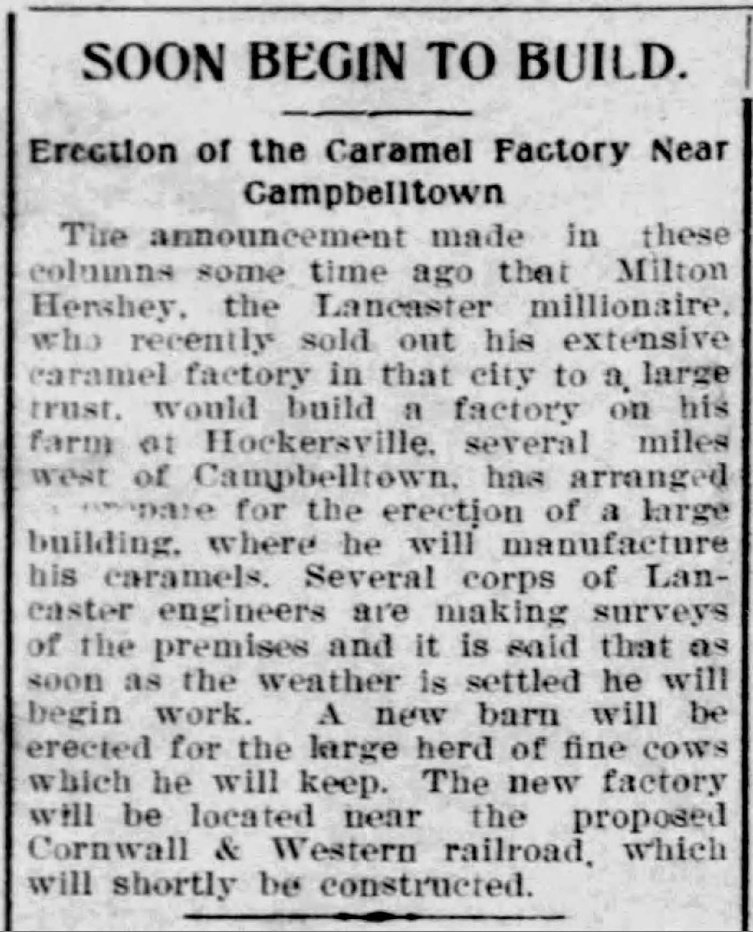
That same day came a report concerning a Lancaster businessman named Milton Hershey, who had recently sold his successful caramel factory for $1 million.
Hershey intended to build a factory on his farm in Hockersville, several miles west of Campbelltown. He was making plans to erect a large building for the manufacture of caramels, to begin in the spring. He also would erect a new barn for the large herd of cows he envisioned.
Why here? And now? He wanted to locate the new factory near the Cornwall & Western Road. Nearly everyone was on board!
The Route as Planned
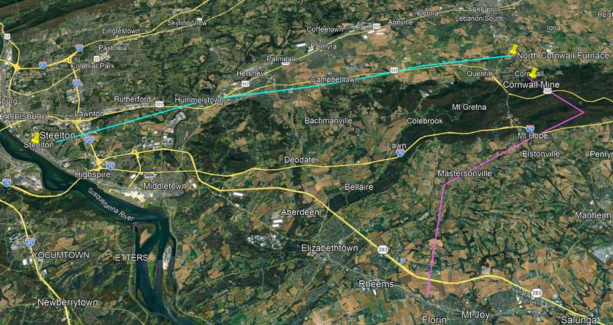
By May 1, the officials of the C.&W.R.R. were more talkative: "the road a certainty, with a passenger depot on the Cornwall Railroad at West Chestnut Street." The Cornwall Railroad would be double-tracked from Lebanon to North Cornwall, where the Cornwall and Western would join and run westward past the North Cornwall furnaces.
From there it would pass just south of Zinn's Mill, continuing west to just north of Fontana, crossing the Horseshoe Turnpike below the Gingrich farm near the village of Mt. Pleasant. From there it would continue westward, passing close to the south of Campbelltown, touching the "Keystone Marble Company quarries" before continuing to Steelton.
In early May the right of way had been secured from Lebanon as far as Campbelltown. As might be expected, not everyone was happy; further west some farmers in Derry were holding out, complaining how badly their land would be cut up.
Plans Derailed
By the end of May, one analyst considered that Freeman and Buckingham, the chief shareholders, capitalized at $250,000, now had a franchise worth a million dollars in the unlikely scenario they might choose to sell it (maybe they should have). Given their interests in the businesses to be served by the Cornwall & Western, they would certainly hold on to it.
The factory broke ground in 1903. In its originally intended place there's a boys' school (founded 1909) and a large medical center (broke ground in 1966). So why the change in plans?
By mid-June the outlook for the little Cornwall & Western was changing, in a big way.
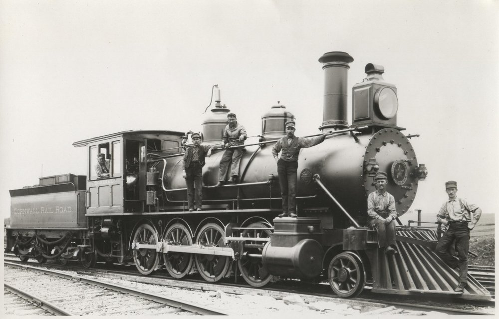
A major merger had strengthened the Pennsylvania Steel Company, which previously had been a target of the United States Steel Company. They announced the purchase of half of the Cornwall Ore Bank, two-thirds of the Cornwall & Lebanon Railroad, and George Dawson Coleman's Lebanon furnaces and associated properties. They had also purchased ore mines in Cuba.
There were also rumors of several major railroads buying a large interest in Pennsylvania Steel, which produced 700,000 tons of steel rails per year.
The Cornwall & Western certainly was in good position to transport Cornwall ore to Pennsylvania Steel. But within a few days the news read differently: "The Cornwall & Western is not being pushed as strongly as it was prior to Pennsylvania Steel having acquired a majority of the Cornwall & Lebanon railroad" (emphasis added).
In the next breath, it was stated that Scranton's Lackawanna Iron and Steel Company, which had been leasing the Bird Coleman furnaces, might support Freeman and Buckingham in completing the Cornwall & Western by joining with the Cornwall Railroad. The old small-town rivalry between two local railroads lived on.
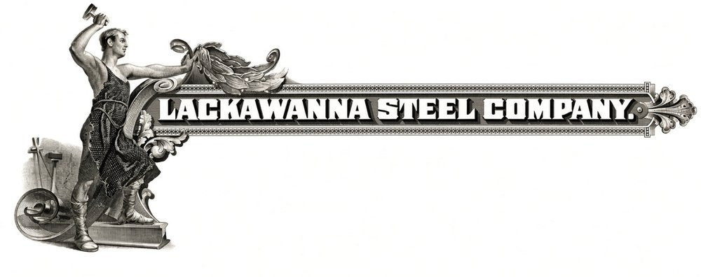
The game darkened quickly, with elephants and alliances stampeding the region for control. Caught in the middle, Howard Shirk, solicitor for the proposed railroad, acknowledged that much was in the air and that he was "awaiting instructions."
Three days later, another shoe dropped, the headline reading "Lackawanna Co. Secures Control of Cornwall Interests," propping up Freeman and Buckingham by renewing a twenty-year lease with the owners of the Cornwall and North Cornwall furnaces, their share of the Ore Banks, and the Cornwall Railroad.
Concerning the Cornwall & Western railroad, Lackawanna's lease included a provision that might reactivate the Mt. Hope to Mt. Joy railroad (planned in 1898 and thought abandoned).
And by the first of July, the engineers that had been assembled for the last few months on the Cornwall & Western were "ordered away, the construction of the line being abandoned for the present." A week later, Edward C. Freeman and an official from Lackawanna traveled the proposed route of the railway, weighing their options. Afterwards, the board of directors met without making a public announcement.
An investigative reporter caught up with a Pennsylvania Railroad executive at the station in Lebanon, questioning him on the future of the Cornwall & Western. "There is no longer any necessity for its construction." Another remarked the acquisition of the Cornwall & Lebanon by the Pennsylvania Steel Company "will kill the Cornwall & Western."
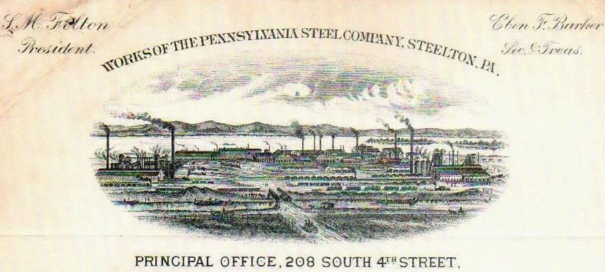
Those remarks proved correct. In only four months from its inception, the proposed railroad had lost steam and would never be built.
By the end of 1901, Lackawanna Iron and Steel negotiated a purchase of the Cornwall assets it had leased earlier in the year.
U.S. Steel was acquired by Japan's Nippon Steel, becoming a subsidiary in 2025.
The story of the Cornwall & Western Railroad did not end in 1901. It continued operating as a company on paper, its charter good for another 998 years. The board of directors met for 40 years, through two world wars and the expansion of Pennsylvania's steel industry.
Tying Up Loose Ends
Finally, on October 22, 1944, a hearing was conducted in the Court of Common Pleas to take up the petition to dissolve the charter of the C.&W.R.R. The newspaper remarked that even older citizens of Lebanon County were never aware that such a corporation existed.
It claimed that the success of Robert H. Coleman's Cornwall & Lebanon Railroad had inspired brothers-in-law B. H. Buckingham and Edward Coleman Freeman to connect their Cornwall Railroad to Steelton. "Though vast sums were spent for surveys and preliminary work, not a rail was laid."
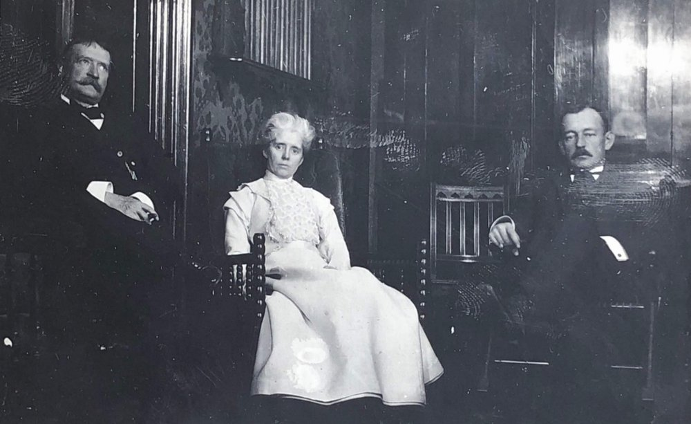
Though the stock was worthless, Pennsylvania statute required chartered corporations to file annual reports. Various law firms and the state authorities were described as "anxious to get the item off the books."
The petition was filed by William C. Freeman, Jr., then-president of the corporation, who had inherited the majority of the stock from his two uncles, who had died in 1906 and 1912 respectively. At the time, Buckingham was the president of the Cornwall Railroad and vice-president of Lackawanna Iron and Steel Company.
Edward's older brother Wm. C. Freeman, who had died in 1903 while visiting his son William at Princeton, had never participated in the Cornwall & Western.
William, born in 1881, was two years old when the Cornwall & Lebanon Railroad company was started. He participated in the family businesses, served in the Pennsylvania House and Senate, and was the Pennsylvania Secretary of Banking during the mid-1940s when he finally dissolved the Cornwall & Western Railroad.
His aunt Margaret Coleman Freeman Buckingham died in 1946, leaving him sole heir of the Cornwall estate. He is better known by some simply as the man who sold the estate to the Methodist Church Home, now Cornwall Manor.
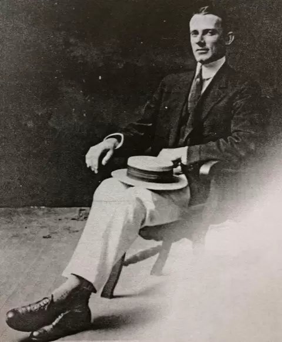
And That Thing About Hershey…
Many know that a prominent tract of land on Quentin Road in West Cornwall was demolished recently to become commercial property. Prior to becoming the Quentin Riding Club in 1934, it had been the Freeman Hackney Farm.
The farm was home to racehorses and hackney ponies, some that had been sent to the Coleman family by Queen Victoria. As the home of William, Jr., it remained famous for its prize horses.
In 1910 William, Jr. added a large herd of cattle to begin a dairy operation. Milton Hershey arranged to purchase the entire output of the dairy and used the milk to make his chocolate.
As mentioned, Hershey built his factory in 1905 alongside the tracks of the Reading Railroad, nowhere near his homestead in the southern part of town.
Strange to consider how different the landscape would be along the Horseshoe Turnpike (Route 322), now adorned by beautiful acres of the Milton Hershey School and the expansive Hershey Medical Center. And where would they have put a theme park?
If some evening you hear the mournful call of a train whistle along the Horseshoe Pike in Campbelltown, it must be a ghost… of what could have been, the Cornwall & Western.
Special thanks to Cornwall Manor historian Henry Deemer, local railroad historian Mark Cain, and of course the Friends of the Cornwall Iron Furnace.
And stay tuned for an upcoming story of Edward C. Freeman, whose old trunk left behind many other details of life in Cornwall at the turn of the 20th century.
Originally published on LebTown, September 9, 2026.